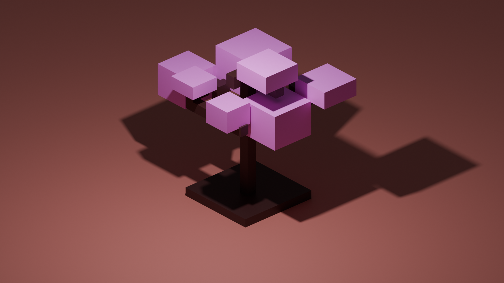

Pink Tree
"Just cubes and extrusions"
Overview
Simple cubes can look nice when used properly, learning how to extrude can help form the cube to various things, in the picture above, it formed a pink tree (does this sound familiar).
It is recommended to do the St. Patrick Objects firstStep 1: scale cube and subdivide
The goal is to create a mini soil area, make sure you are doing this in edit mode, as subdividing can only be done in there. In this picture, I subdivide 3 times
Step 2: much MUCH MORE extrusions
This part is freestyle, use your knowledge of extruding to create a belivable branch and tree
Step 2: add the leaves (as cubes)
This part is all about adding a bunch of cubes to fit in the tree branch, 'Shift + A' > mesh > cube to add cubes, then use 'G' to grab that cube and carefully place them on the branch
Step 3: Coloring
Time to add colors, the leaves should be pink, the branch is brown
Step 4: camera and render
Add a plane with some color, then set up the camera to be orthographic (isometric)
Lastly, render the image at cycles for some good visuals.